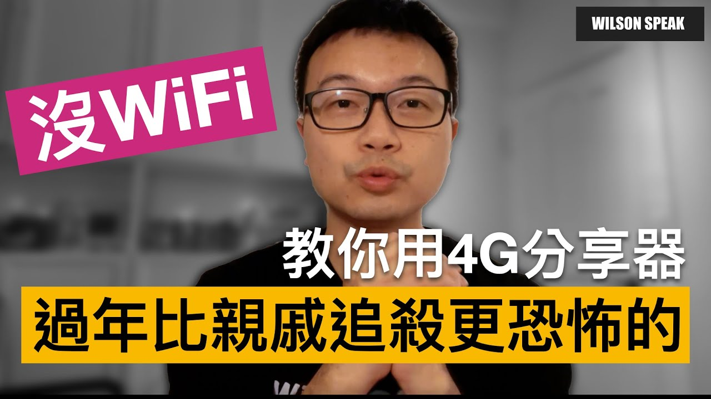
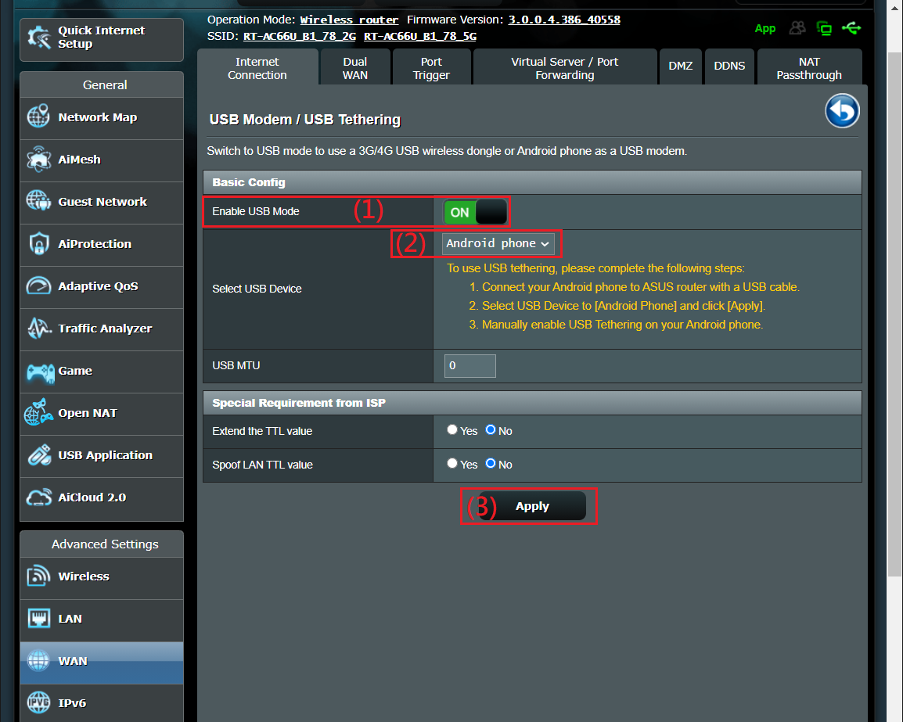

沒有光世代也能用分享器：手機 USB 網路共享怎麼接

原片發布 2021-02-06 · 點封面看原片。
老家暫時沒有固定寬頻，或家裡斷網時，手機還有可用的行動數據。若路由器支援，可以讓它透過 USB 使用手機的連線，家中的電腦和其他裝置再接回路由器，不必每台都重新安排上網。
這篇延伸自 2021 年的教學。方法利用既有的網路共享功能，並不是改裝出一顆新的行動數據模組；相容性、介面和資費條件要用你現在的手機、路由器與方案確認。
老家沒固定寬頻，先找得到可用的行動訊號
先用手機的行動數據，在預計放設備的位置做一次實際視訊或播放。訊號格數只能當部分參考，速度與穩定度還可能受基地台使用狀況、方案與所在位置影響；路由器不能把上游原本不存在的服務變出來。
若表現不理想，可以比較家中不同合適位置與時段，再決定是否值得接下去測。不要直接假設買更貴手機就會解決，也不要把某次測速當成每天的保證。先確認這個來源能滿足需要，再花時間安排家用端設備。
手機當上游，路由器負責家裡的連線
連線路徑是手機接收行動網路，透過 USB 網路共享交給相容的路由器，再由路由器讓家中裝置接入。這和讓筆電直接連手機 Wi-Fi 熱點，是不同的接法，也不代表路由器自己已內建 SIM 卡與行動網路功能。
好處是可以保留原本部分家用連線安排，但是否支援、會保留哪些功能，仍須查型號。這個操作一般不需要開發者選項或 USB 偵錯；先使用官方網路共享流程，不要把手機傳檔、USB 充電與網路共享當成同一件事。
一般路徑示意；有 USB 孔或手機正在充電，不代表已經成功分享網路。
有 USB 孔，不代表支援 USB 網路共享
路由器的 USB 孔可能只支援儲存、列印或其他用途。就算文件列出 USB 數據機，也要繼續確認是否包含你的手機類型；支援某些行動網卡，不代表任何 Android 或 iPhone 都能使用。
ASUS 的官方說明也依韌體提供不同流程。找不到舊片裡的選單時，先查精確型號與版本，不要直接判定硬體不支援，更不要套別台機器的韌體。手機系統與路由器兩端的相容資訊，都要一起核對。
- 記下手機型號、系統版本、路由器型號與韌體。
- 查官方是否明確支援這組手機共享方式。
- 確認使用的是能傳資料的 USB 線，而非只有充電功能。
用整組線材與設備，照順序設定
先確認手機行動數據正常，再用可傳資料的 USB 線連接支援的路由器。依手機官方方式開啟 USB 網路共享，並依路由器對應版本的流程選擇 USB 上網來源；需要解鎖或確認的提示，按實際畫面處理。
先讓一台家用裝置測試，確認路由器顯示的上游與你預期相同。手機有充電，不能證明已共享成功；USB 被偵測到，也不能保證已完成連外。分別查看手機、路由器狀態與終端服務，會比較容易知道卡在哪裡。
- 先測手機本身的行動數據。
- 接妥資料線，依官方流程啟用手機共享與 USB 上游。
- 先用一台終端測試，再逐步加入其他設備。

想當斷網備援，還要另外測切換
如果還有固定寬頻，想在它斷線時切到手機，就要另查雙 WAN 與故障轉移支援。測通 USB 上網只完成一部分，路由器如何判斷主線失效、如何切回，以及切換後哪些服務受影響，都需要實際驗證。
負載平衡和故障轉移是不同用途。一般分流不等於把兩條線的速度加到單一下載，切換出口也可能中斷既有連線。先留下能回復的設定，在不影響重要工作的時段測切換與回復，別等真正開會斷網時才第一次試。
長時間使用，流量、供電與穩定度都要顧
長時間使用時，確認手機與路由器有合適供電、通風與放置空間，並觀察是否有充電、發熱或斷線異常。不要任意加上不明供電轉接組合；需要配件時，依手機與路由器的支援資訊安排，用整組配件一起測。
另外要核對行動方案的網路共享規則、流量、速率與費用。手機本身吃到飽，不代表所有共享方式都沒有另外限制。若有多人看影片、雲端備份或系統更新，實際用量可能增加；先看帳戶用量與服務條件，再判斷適合偶爾備援還是長期使用。
- 核對方案的共享限制與費用條件。
- 用預計長期使用的供電、資料線與擺位測試。
- 觀察多人使用與更新時的穩定度、用量和上游狀態。
你可能還想問
iPhone 也能接路由器嗎？
部分支援的路由器與韌體有對應流程，但要核對精確型號、手機版本和官方條件，不能用 Android 成功就推論 iPhone 也一樣。
有充電，為什麼還是不能上網？
可能是線材、共享未啟用、上游選擇或相容性等問題。充電只證明有供電，依手機和路由器狀態逐段確認。
斷線自動切換，視訊就不會斷嗎？
不能保證。出口與既有連線可能改變，應用也有自己的重連行為。需要可靠備援時，務必用實際工作測試切換與回復。
影片與參考資料
原片發布 2021-02-06。文章整理 2026-11-14，依影片公開字幕、說明延伸，並以官方資料校訂。實際設定請對照你的型號與版本。